An Introduction to
Trichrome Photography
What is Trichrome Photography?
Trichrome photography is a method of creating color photographs using three separate black-and-white images. Traditionally the process is done using black and white film and colored filters, but it can be performed using a variety of capture methods. Depending on the spectral qualities of the filters and the recording medium, the final image can produce a variety of unique looks.
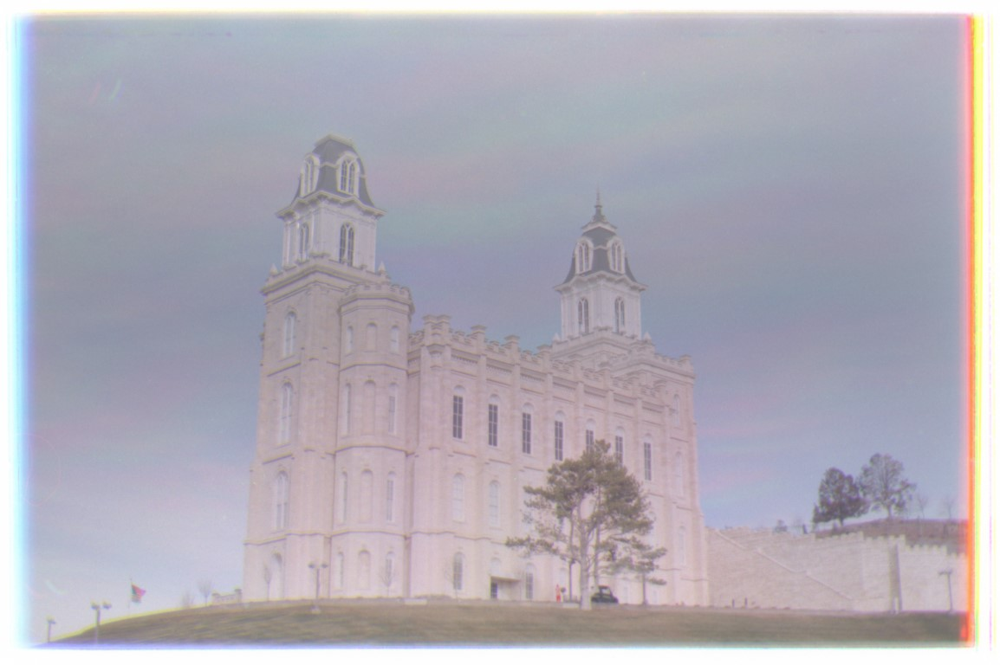
Manti Utah Temple
(c) 2025 Kyler Olsen
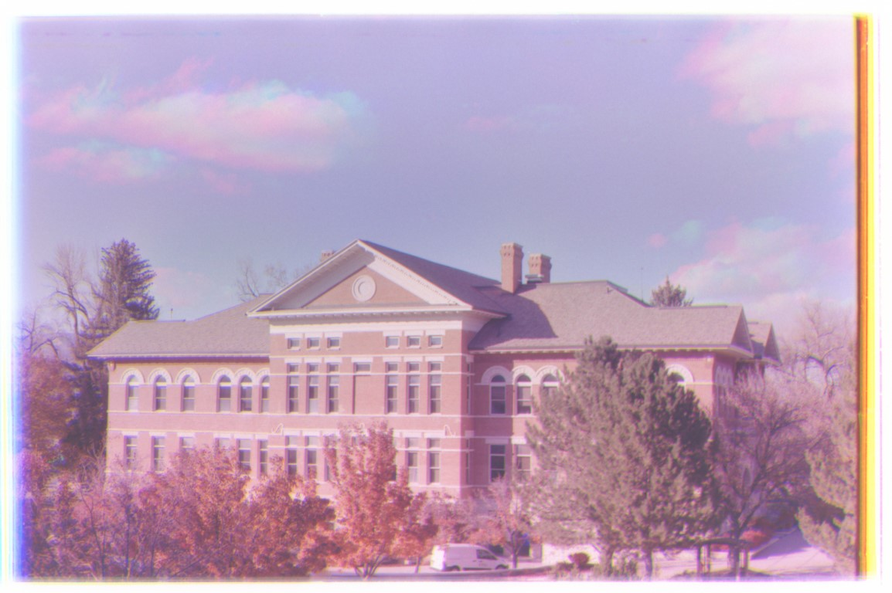
Snow College Noyes Building, Full Color, Mid-Autumn
(c) 2025 Kyler Olsen
How Does Trichrome Photography Work?
The human eye has two types of photoreceptor (light sensitive) cells called rods and cones. Rods are more sensitive to general visible light, providing better contrast and night vision. Cones are less sensitive, but are responsible for color vision. They come in three variants: L, M, and S cones, each sensitive to different parts of the visible spectrum, peaking at what we call red, green, and blue light respectively, and overlapping with less sensitivity.
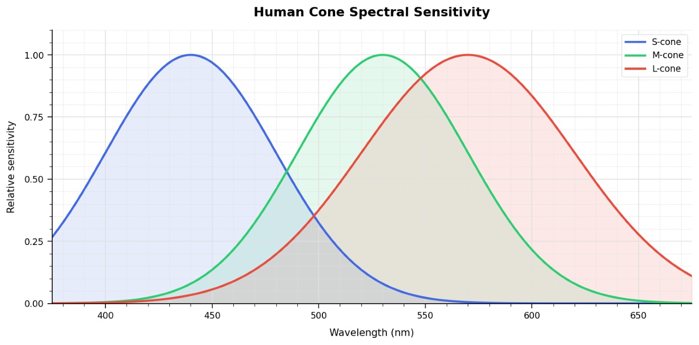
(c) 2026 Kyler Olsen
Other colors in the visible spectrum result from the combined activation of multiple types of cones. For example, the sensation of yellow occurs when both L and M cones are stimulated. This can happen either from yellow light itself or from a combination of red and green light stimulating the two cone types separately.
As it is indistinguishable whether the light is yellow or a combination of red and green light, we can use this principle to simplify the recreation of color. Digital cameras use a grid of tiny light-sensitive sensors covered by a color filter array. These filters allow the camera to measure the intensity of light in different regions of the spectrum. The image can then be replicated using screens with red, green, and blue subpixels.
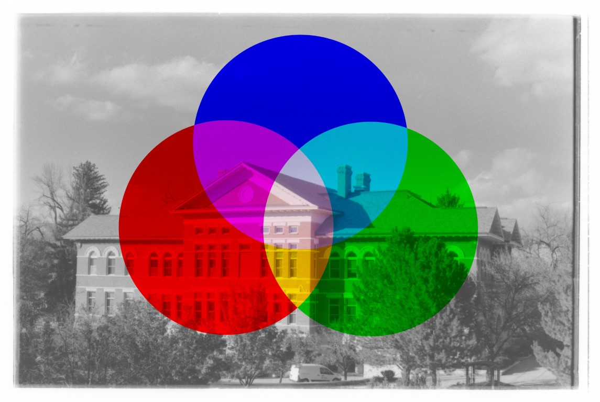
Example of Additive Color Mixing
(c) 2026 Kyler Olsen
Color film works in a similar manner, with three separate layers of light sensitive material called emulsions. Each emulsion is sensitive to different wavelengths of light and is coupled with associated color dyes that can be activated after development.
Trichrome photography relies on this same principle of recording light in three different regions of the visible spectrum. Instead of capturing these spectral regions simultaneously using digital sensors or layered film emulsions, trichrome photography records them using three separate exposures. Each exposure records only the brightness within one region of the spectrum. These separate exposures can then be stacked or composited, assigning each image to its corresponding color channel to create a full-color image.
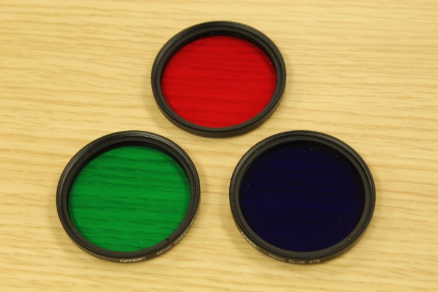
Red, Green, and Blue Filters
(c) 2026 Kyler Olsen
A Brief History of Trichrome Photography
Building on the work of Isaac Newton and Thomas Young, Physicist James Clerk Maxwell and Photographer/Inventor Thomas Sutton first demonstrated the theory of a three-color process in 1861 by taking three pictures of a ribbon using red, green, and blue, which barely worked as Sutton's photographic plates were less sensitive to longer wavelengths of light.
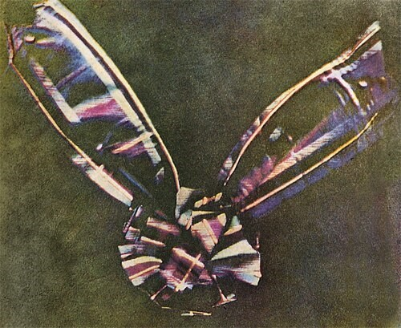
Tartan Ribbon
1861 - James Clerk Maxwell and Thomas Sutton
Public Domain
The technique was further developed by other photographers and photochemists. A notable pioneer was the Russian chemist and photographer Sergey Prokudin-Gorsky. Prokudin-Gorsky was commissioned by the Russian Tsar to document the Russian Empire. The majority of his color photographs were taken using three exposures with red, green, and blue filters between 1905 and 1915. By the 1920s and 1930s, Eastman Kodak's color films became widely available, making the three-exposure technique largely obsolete.
In 1948 Prokudin-Gorsky's surviving negatives were purchased from his heirs by the United States Library of Congress, and in 2000 a fraction were digitally recomposited. With the advent of digital image processing and a renewed interest in analog photography, amateur photographers have become fascinated with trichrome photography, reviving the technique in the 21st century.
Here are several examples from Prokudin-Gorsky's work that demonstrate the remarkable quality achievable with the three-color process.
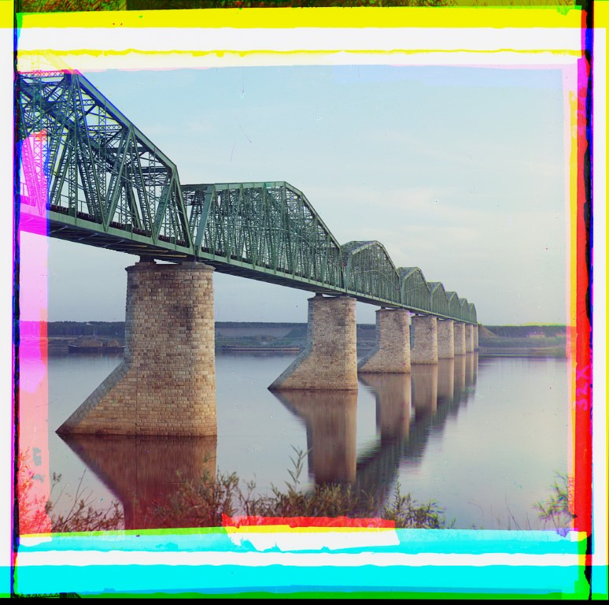
Metal Truss Railroad Bridge, Kama River
c. 1909-1915 - Sergey Prokudin-Gorsky
Public Domain
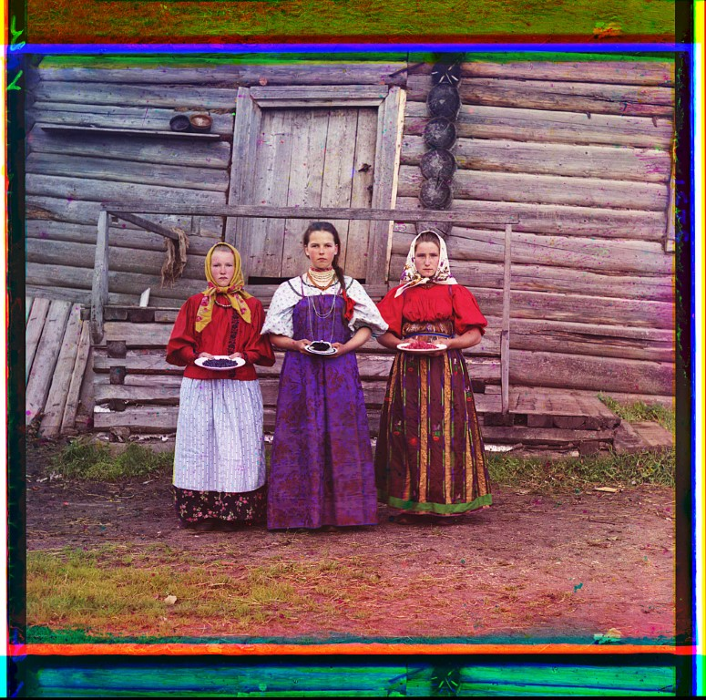
Russian peasant girls in Kirillov
1909 - Sergey Prokudin-Gorsky
Public Domain
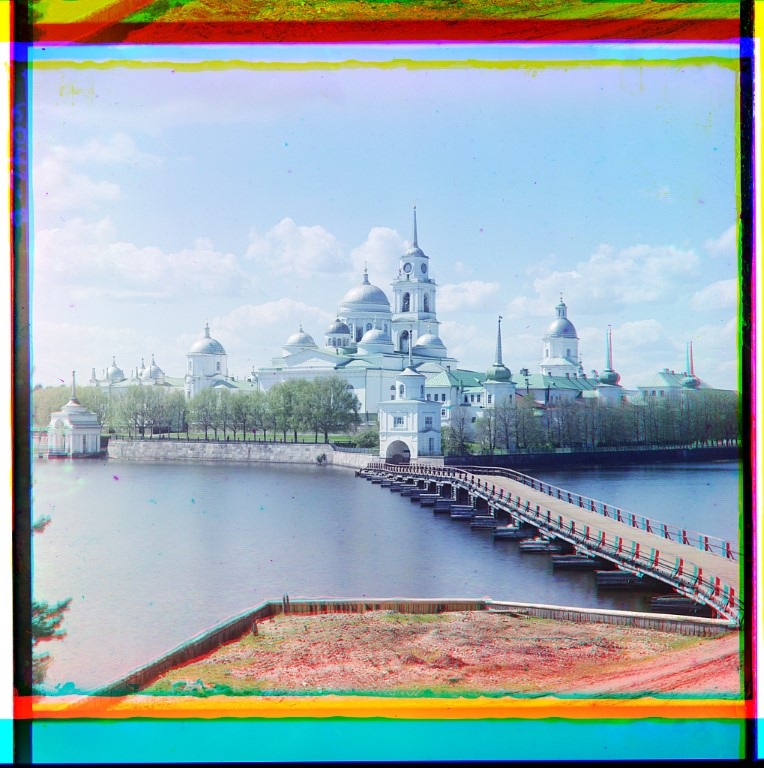
The Monastery of St. Nil on Stolobnyi Island
1910 - Sergey Prokudin-Gorsky
Public Domain
Equipment Needed for Trichrome Photography
The following two sections assume you are using a 135 film SLR camera with panchromatic 135 (35 mm) film.
- Manual (or aperture-priority) 135 film SLR camera
- 135 (35 mm) panchromatic black and white film
- Red filter (Wratten #25)
- Green filter (Wratten #58)
- Blue filter (Wratten #47B)
- Sturdy tripod
- Threaded shutter release cable
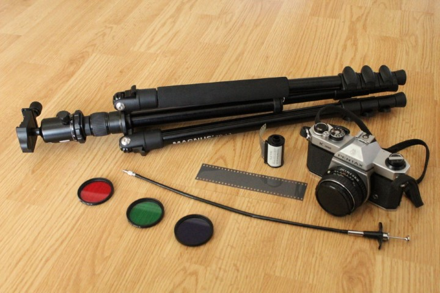
Equipment Needed for Trichrome Photography
(c) 2026 Kyler Olsen
How to Take Trichrome Photographs
- Load your camera with black and white panchromatic 135 film.
- Set up your camera with your shutter release cable on your tripod.
- Frame and compose your shot.
- Set your aperture and focus.
- Meter your scene.
- Using the red filter, take a picture with 3-stop exposure increase.
- Using the green filter, take a picture with 2-stop exposure increase.
- Using the blue filter, take a picture with 3.5-stop exposure increase.
Notes
- Depending on your light meter and film you may need to meter without the filters as film and some meters have different levels of sensitivity to different parts of the spectrum.
- It is better to adjust your shutter speed between shots than your aperture to preserve focus and depth of field.
- Do not move the camera between frames.
- Use your shutter release cable to take pictures to avoid camera shake.
- For shutter speeds longer than one second, many films become less sensitive, so you may need to account for your film's reciprocity failure which you can find on the data sheet for your film.
- Because trichrome photography requires three separate exposures, it works best with stationary subjects such as architecture, landscapes, or still life arrangements. Moving subjects may produce color fringing or ghosting effects.
Compositing Trichrome Photographs
After developing and digitizing your film, you should have three grayscale images corresponding to the red, green, and blue filtered exposures. Load the three images into Adobe Photoshop or another capable image editor. Each image should be assigned to its corresponding RGB color channel:
- Red filter exposure → Red channel
- Green filter exposure → Green channel
- Blue filter exposure → Blue channel
The following images show the three filtered exposures used to construct a trichrome image.
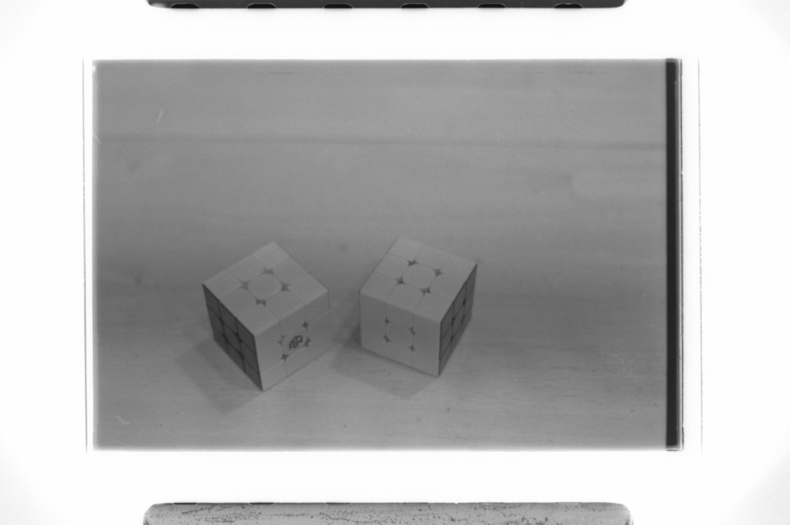
Two Rubik's Cubes, Red Channel
(c) 2025 Kyler Olsen
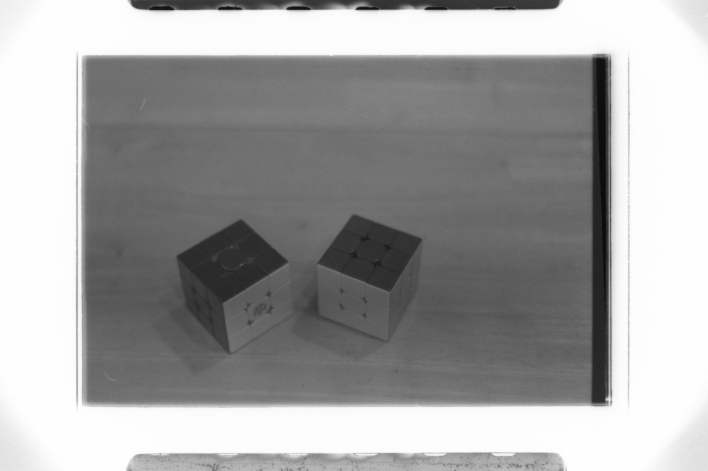
Two Rubik's Cubes, Green Channel
(c) 2025 Kyler Olsen
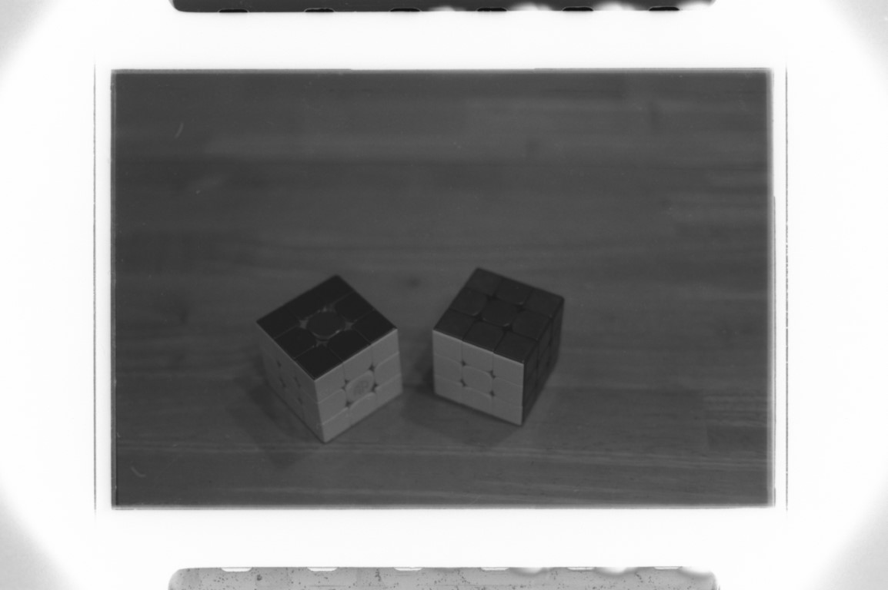
Two Rubik's Cubes, Blue Channel
(c) 2025 Kyler Olsen
Some image editors require converting the images into grayscale layers before assigning them to color channels. The images may require alignment if the camera or subject moved slightly between exposures. Once aligned, combining the three channels produces the final color image.
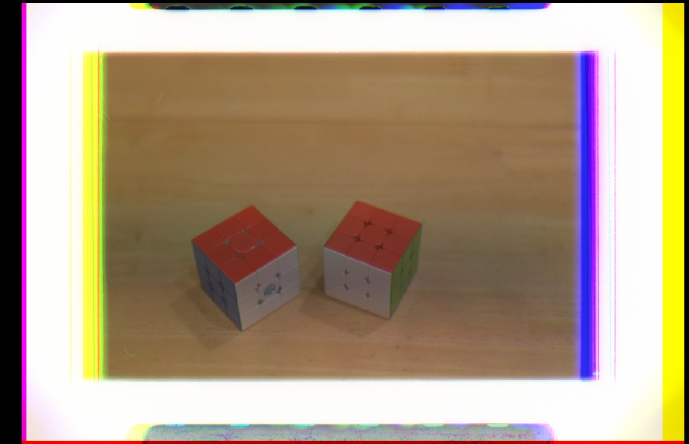
Final trichrome image created by combining the red, green, and blue filtered exposures.
(c) 2025 Kyler Olsen
Additional Information
Here is a printable field reference card.
Library of Congress Prokudin-Gorskii Collection